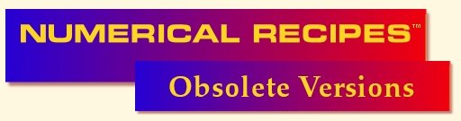

Numerical Recipes 2nd ed. ANSI C++ Files
The best way to find a routine of interest is by one of the following
two links. (You will be able to go back and forth between the two by
clicking on the chapter number links, and you will also be able to get
to the Example routines that demonstrate the Recipes.)
Access via Directories:
Here is direct access to the directories containing miscellaneous files:
Here is direct access to the directories containing the Recipes and
the Example routines. Caution: These directories contain many files
each; older browsers may choke. It is generally better to access
through the above Numerical Recipes Routines by
Chapter and Section link.
Finally, here are